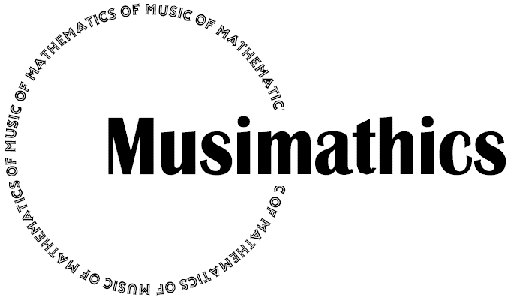

Musimat Version 1.2 was released November 26, 2010.
Added support for Apple Xcode development environment
Several compilation-related errors and warnings were fixed
Better formatting so the code is easier to read
Some further explanatory information was added
Additional information on how to run the tutorials was added to INSTALL.txt
No major new functionality was introduced.
The Musimat code in Gareth Loy's book "Musimathics Vol. 1" can be downloaded for free here. Or, you can view the sources and other documentation for Musimat on-line here.
In "Musimathics
Vol. 1", Gareth Loy introduces a programming language he
calls "Musimat", designed for the musical examples in his
book. He describes Musimat as "C++ in sheep's clothing."
Indeed, Musimat is a simplified version of the C++ programming
language designed for didactic purposes. Musimat provides a
straightforward introduction to programming in a modern computer
language and especially provides a demonstration of how to begin to
adapt such a language to musical purposes.
The Musimat code
consists of three software projects:
The Musimat Tutorial -- an introduction to Musimat based on Appendix B of "Musimathics Vol. 1".
Musimat examples -- musical examples and explanatory text derived from Chapter 9 of "Musimathics" Vol. 1.
The Musimat Library -- data types and operations of Musimat. The Musimat Library is used by the Musimat Tutorial and Chapter 9 materials.
The software download consists of source code in Musimat and C++, documentation, makefiles, executables, and project files for building the source code.
Download Musimat.exe, a self-extracting archive file for Windows. When the file has been downloaded, execute the file to install the software. A dialog box will open allowing you to choose a destination directory for installing Musimat.
Download Musimat.zip, a zip archive file.
For MacOS, double-click on the downloaded file, which will extract its contents to a folder in the same directory.
For Windows, you may need a zip file extraction tool such as WinZip to open the file and extract its contents. Such a tool can be found here. Many other similar products are available elsewhere on the World Wide Web, some of them freeware.
If you just want to examine the code, you can view it on-line here. To compile and run the code, you will need to have a C++ code development platform, such as:
Apple Xcode – a free integrated software development environment (IDE) for C++ and other languages. If you are running MacOSX, you can get it for free here.
Cygwin -- a free software development package that emulates the development environment of the standard Unix operating system on Windows platforms.
Visual .NET C++. -- Microsoft's integrated development environment (IDE) for C++. A freeware version of this IDE is available here.
Visual SlickEdit -- an alternative IDE. There's also a version for Macintosh. This is an excellent code surfing tool.
FreeBSD Unix -- a modern freeware version of UNIX for x86 compatible computers with integrated development tools
Linux -- freeware operating system with integrated development tools.
If you are just getting started and run Windows, I recommend the freeware version of Visual .NET C++, or the full version if you can afford it. If not, then Cygwin is free, but offers only a line-oriented user interface. Visual SlickEdit provides an IDE, is very flexible, and has many useful features at moderate price. Unix and Linux are complete operating systems that include line-oriented code development systems. Apple's Xcode is excellent and free if you are running MacOSX.
Documentation consists of::
The Musimat Tutorial -- an introduction to Musimat based on Appendix B of "Musimathics Vol. 1".
Musimat examples -- musical examples and explanatory text derived from Chapter 9 of "Musimathics" Vol. 1.
The Musimat Library -- data types and operations of Musimat. The Musimat Library is used by the Musimat Tutorial and Chapter 9 materials.
Other links of interest:
"Musimathics" is widely available from bookstores.
Here is the MIT Press website:: http://mitpress.mit.edu/catalog/item/default.asp?ttype=2&tid=10916
Gareth Loy's Musimathics website: http://www.musimathics.com/
Gareth Loy's home page: http://www.GarethLoy.com/
Gareth, Incorporated: http://www.GarethInc.com/
Musimat, the Musimat Tutorial, the documentation, examples, and library are © 2006 Gareth Loy, and are released under the terms of the GNU General Public License available here: http://www.gnu.org/licenses/gpl.txt. Musimat is released WITHOUT ANY WARRANTY; without even the implied warranty of MERCHANTABILITY or FITNESS FOR A PARTICULAR PURPOSE. For information on usage and redistribution, and for a DISCLAIMER OF ALL WARRANTIES, see : http://www.gnu.org/licenses/gpl.txt, or the file, LICENSE.txt, in this distribution.
--
Last updated: October 30, 2010